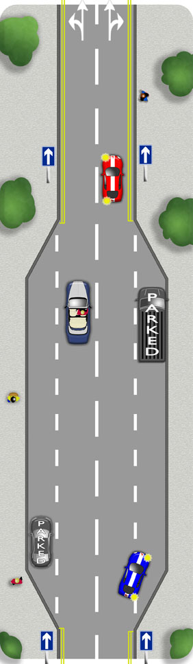

It is crucial to recognise where one way streets begin and
end. ‘No entry’ and ‘one way’ road signs will be clearly placed to help you. Also look out for 'no left or right turn' signs at junctions.
The difference between the road markings at the beginning and end of a one way
street are vital indicators as well.
When emerging from a one way street to turn right, be sure to position yourself to the right of the road to avoid confusion with other right turners and to allow left turners to emerge simultaneously. Failure to take this position will result in a fail on your driving test.
Don't reverse into a one way street as you would then be emerging against the traffic flow.
Be aware if the one way street you are travelling on becomes two way.
One Way - Lanes
Choose the most appropriate lane for your destination as soon as possible.
- If you are going to turn left, choose the left lane.
- If you will turn right, use the right one.
- If you will be going ahead, use the
most appropriate lane according to the road signs and markings. Where you have
a choice, the left is often most suitable.
Unlike a two way road, traffic will often pass on both sides. Be especially aware of this when changing lanes.
If you’re travelling in the right hand lane, be aware of
pedestrians who might not look properly to their left before stepping out.

Where parking is not restricted, it is OK to use the right side of the road on a one way street.
Some one way roads have contraflow systems where bus and/or bike lanes will flow in the opposite direction.